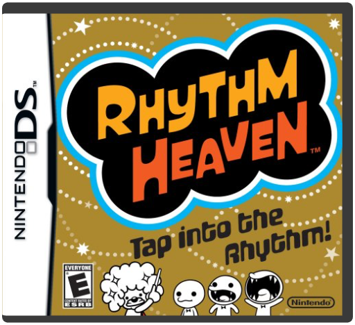
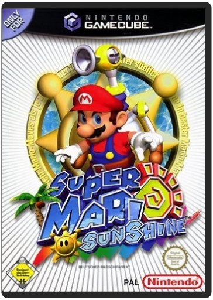
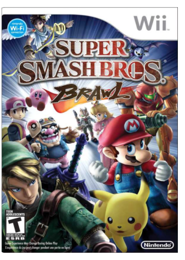
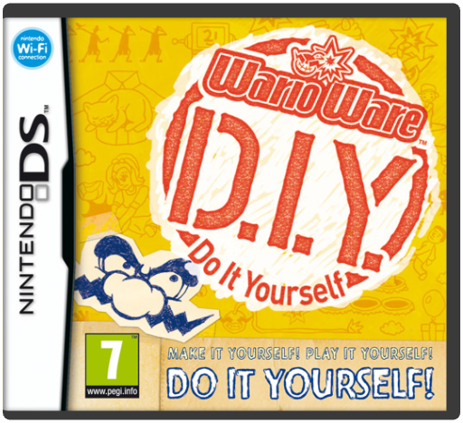
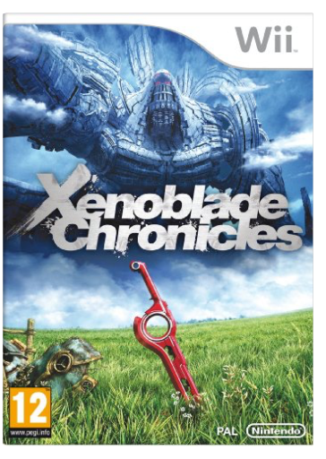

 Rhythm HeavenNintendo  f you've ever found yourself tapping your foot or fingers to an infectious beat, then this game is for you. Get ready to show off your instinctive sense of rhythm as the music of Rhythm Heaven challenges you to demonstrate your percussive prowess. Prove you have what it takes to keep the beat alive in this fun and engaging experience.  Super Mario SunshineNintendo In his newest adventure, Mario visits a tropical island and is mistaken for a local outlaw. So he straps on a hydro-powered water pump to clean up the mess, clear his name and meet up with old friends. Hose down enemies and meet the locals in this colorful, action-packed adventure set in sprawling 3D worlds with surprises around every corner. Made in USA. |  Super Smash Bros. BrawlNintendo Engage the rage with Super Smash Bros. Brawl! The third instalment of the incredibly successful Super Smash Bros. series is now on the Wii, The roster islonger than ever, but that just means more butt to kick across over a dozen different, graphic-rich stages with original moves, new modified moves, and a brand-new super attack called Final Smash! Old favourites like Mario, Link, Peach and Kirby are now joined by such exciting newcomers as Wario, Solid Snake and Sonic the Hedgehog. With a variety of new modes, an absolutely epic soundtrack and the ability to play with distant friends through online multiplayer, this is a game you'll have to break your own fingers to put down. Original soundtrack from 36 different artists Online Multiplayer See your favourite Smash Bros. character, redesigned from their most recent games, brawl onto your screen once again!A host of new characters to fight with, including Sonic, Pit from Kid Icarus, Wario and Diddy KongMore than a dozen gorgeously-rendered stagesNew special moves and attacks, including the groundbreaking Final SmashNew items and assist trophies  WarioWare : D.I.YNintendo WarioWare D.I.Y. lets players create the same kind of microgames that are the hallmark of the WarioWare series. Players design every aspect of their creations, including graphics, animations, music, and rules. With a little help from Wario, you'll be making your very own microgames in no time. Let Wario and his cohorts show you the ropes every step of the way. Go online to share your coolest game creations, and download games made by others. WarioWare D.I.Y. is bursting with make-your-own gaming goodness.  Xenoblade ChroniclesNintendo Nintendo of Europe brings the epic RPG, Xenoblade Chronicles brings to life a universe where two titans - Bionis and Mechonis collide in a war that knows no end. As the aeons pass, the lifeless bodies of the titans remain and life soon evolves on each world. The two main races, the Mechon (a race of robots) and the Homs (humans) are locked in battle for control of the world. You join the battle for Bionis to repel the invasion of the terrifying mechanical army and uncover the secrets of a mystical sword called the Monado.  Pre-Order Offer: Pre-Order now and get Dark Souls II: Black Armour Edition for the same price as the standard edition. Includes: Free Collectible Metal Case, Standard Game and Game Soundtrack. |

Game Collection
Collection Total:
121 Items
121 Items
Last Updated:
Oct 13, 2014
Oct 13, 2014


 Made with Delicious Library
Made with Delicious Library